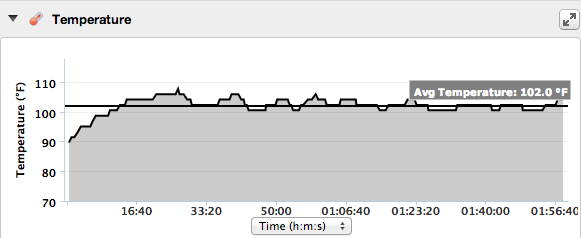

Hotter 'N Hell Hundred Pre-ride 30 miles in 102.0 degrees
19 Aug 2013

Today I went for a ride in the middle of the afternoon to see what it is like riding the F-40 in temperatures above 100 degrees.
Average temperature: 102.0, highest temperature: 107.6
I rode really easy so as not to over heat. Coast all downhills - even ride the brakes to keep my heart rate really low. Then soft peddle the uphills.
It was pretty hot. I sucked the gatorade constantly and even then lost 4 pounds water weight in the two hours riding.
Everything was ok except for the feet. No breeze on the feet, even when moving, due to the front fairing. Really had to work the toe crunches after the first hour to keep from getting hot foot.